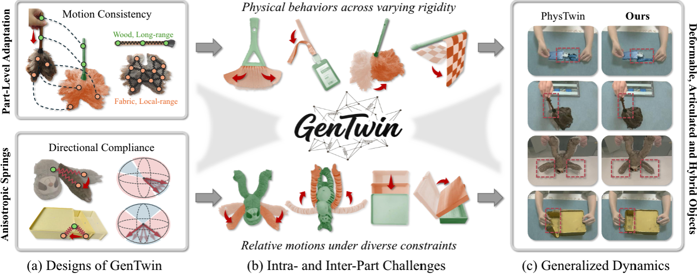
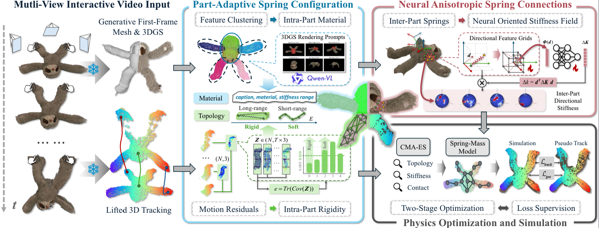

Physically realistic digital twins are important for modeling and interacting with the physical world. Existing methods typically rely on category-specific formulations, limiting generalization across object categories. We introduce GenTwin, a part-aware framework that models generalized dynamics from real-world interaction observations within a common spring-mass representation. For intra-part dynamics, a Part-Adaptive Spring Configuration adapts stiffness and topology to heterogeneous part rigidity using material priors and motion-derived cues. For inter-part dynamics, Neural Anisotropic Spring Connections use part-pair Neural Oriented Stiffness Fields to parameterize continuous direction-dependent stiffness, capturing relative motions from flexible coupling to constrained articulation. Experiments on 18 real-world scenarios spanning deformable, articulated, and hybrid objects demonstrate consistently improved geometric accuracy across object categories.

Select an object category and interaction scenario to compare GenTwin with the applicable baselines in camera view 1. Observation videos provide the captured reference motion.
We apply unseen controller trajectories to digital twins reconstructed from the observed interactions. For each task, PhysTwin and GenTwin are evaluated under the same novel manipulation.